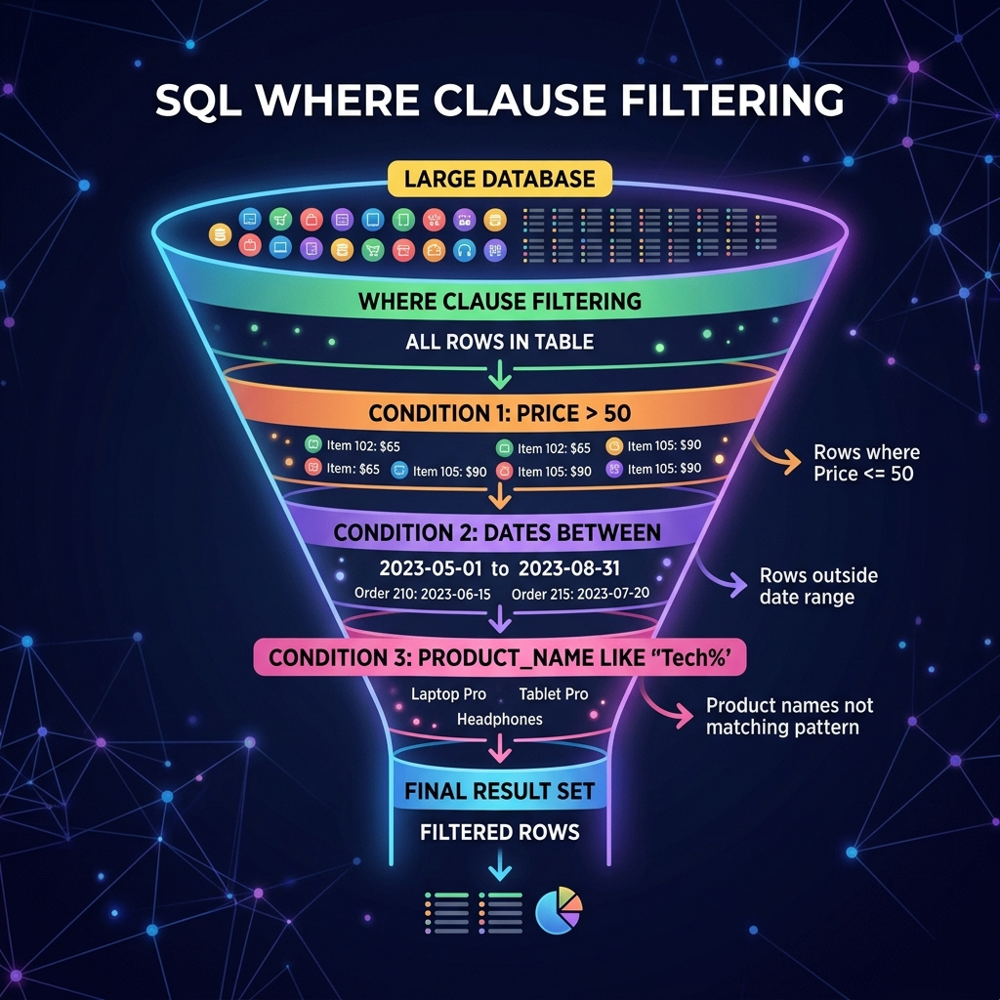

သင်ခန်းစာ ၁၀ — Data စစ်ထုတ်ကြည့်ရှုခြင်း (WHERE & Filtering)

ဒေသင်ခန်းစာမာ WHERE Clause ကို အသုံးပြုပနာ လိုအပ်သော ဒေတာများကို သီးသန့် ရှာဖွေ စစ်ထုတ်နည်းကို လေ့လာသွားပါဖို့။
ခန့်မှန်း ကြာချိန် - မိနစ် ၂၅
🎨 WHERE Clause Filter အလုပ်လုပ်ပုံ visual Diagram
┌─────────────────────────────────────────────────────────────────────────┐
│ WHERE CLAUSE FILTER FUNNEL │
├─────────────────────────────────────────────────────────────────────────┤
│ │
│ [ Data အတန်း အားလုံး ] ──► ( 1, 2, 3, 4, 5, 6, 7, 8, 9, 10 ) │
│ │ │
│ ▼ │
│ ┌──────────────────────────────┐ │
│ │ FILTER: WHERE price > 50 │ │
│ └──────────────┬───────────────┘ │
│ │ │
│ ▼ │
│ [ စစ်ထုတ်ချက်နန့် ကိုက်ညီသော ဒေတာ ] ──► ( 6, 7, 8, 9, 10 ) │
│ │
└─────────────────────────────────────────────────────────────────────────┘
💡 WHERE Clause ၏ အခြေခံ ပုံစံ
SELECT * FROM table_name
WHERE condition;
🔢 အဆင့် ၁ - နှိုင်းယှဉ်ချက် သင်္ကေတများ (Comparison Operators)
| သင်္ကေတ | အဓိပ္ပာယ် | ဥပမာ |
|---|---|---|
= | ညီမျှသည် | WHERE price = 29.99 |
> | ကြီးသည် | WHERE price > 50 |
< | ငယ်သည် | WHERE age < 18 |
>= | ကြီးသည် သို့ ညီသည် | WHERE stock >= 10 |
<= | ငယ်သည် သို့ ညီသည် | WHERE price <= 20 |
!= သို့ <> | မညီပါ | WHERE status != 'cancelled' |
🔗 အဆင့် ၂ - AND / OR ဖြင့် အခြေအနေများ ပေါင်းစပ်ခြင်း
ဥပမာ (၁) - AND (နှစ်ခုလုံး မှန်ရမည်)
SELECT name, price FROM products
WHERE price > 20 AND price < 60;
ဥပမာ (၂) - OR (တစ်ခုမဟုတ် တစ်ခု မှန်လျှင် ရပြီ)
SELECT first_name, city FROM customers
WHERE city = 'Yangon' OR city = 'Mandalay';
🎯 အဆင့် ၃ - BETWEEN ဖြင့် အတိုင်းအတာ သတ်မှတ်ခြင်း
-- စျေးနှုန်း ၂၀ နန့် ၅၀ ကြားဟိသော ပစ္စည်းများ
SELECT name, price FROM products
WHERE price BETWEEN 20 AND 50;
-- ၂၀၂၅ ဖေဖော်ဝါရီလအတွင်း ဖြစ်သော အော်ဒါများ
SELECT * FROM orders
WHERE order_date BETWEEN '2025-02-01' AND '2025-02-28';
📋 အဆင့် ၄ - IN ဖြင့် စာရင်းထဲမှ ရွေးချယ်ခြင်း
SELECT first_name, city FROM customers
WHERE city IN ('Yangon', 'Mandalay', 'Sittwe');
🔍 အဆင့် ၅ - LIKE ဖြင့် စာသား ပုံစံ ရှာဖွေခြင်း (Wildcard Search)
┌────────────────── LIKE Wildcards visual Guide ──────────────────┐
│ │
│ % = စာလုံး အရေအတွက် မကန့်သတ် မည်သည့် စာလုံးမဆို │
│ _ = အက္ခရာ တစ်လုံးတည်းကိုသာ ညွှန်းသည် │
│ │
│ 'J%' ➔ J ဖြင့် စသော စာလုံးများ (John, Daw Hla, J-...)│
│ '%as' ➔ as ဖြင့် ဆုံးသော စာလုံးများ (Dallas) │
│ '%Pro%' ➔ စာသားထဲမာ Pro ပါလျှင် ရပြီ (Pro Max, iPad Pro) │
│ '_ohn' ➔ ရှေ့မာ အက္ခရာတစ်လုံးပါပနာ ohn ဖြင့်ဆုံးသူ │
└─────────────────────────────────────────────────────────────────┘
-- Email စာလုံး "j" ဖြင့် စသော သူများ
SELECT first_name, email FROM customers WHERE email LIKE 'j%';
-- အမည်ထဲမာ "Pro" ပါသော ပစ္စည်းများ
SELECT name FROM products WHERE name LIKE '%Pro%';
📝 လေ့ကျင့်ခန်း (Exercise)
၁. စျေးနှုန်း $30 ထက် သက်သာသော ပစ္စည်းများကို ရှာပါ။ ၂. "Electronics" သို့မဟုတ် "Sports" အမျိုးအစား ပစ္စည်းများကို ရှာပါ။ ၃. အမည်မာ "Pro" ဟု ပါဝင်သော ကုန်ပစ္စည်းများကို LIKE သုံးပနာ ရှာပါ။
➡️ နောက်ထပ် သွားရမည့် အဆင့်
Data စစ်ထုတ်နည်းကို လေ့လာပြီးပြီ ဖြစ်လို့ ရရှိလာသော Data များကို အစဉ်လိုက် စီစဉ်ခြင်းနန့် အရေအတွက် ကန့်သတ်ခြင်း (ORDER BY & LIMIT) ကို ဆက်လက် လေ့လာကြပါစို့။